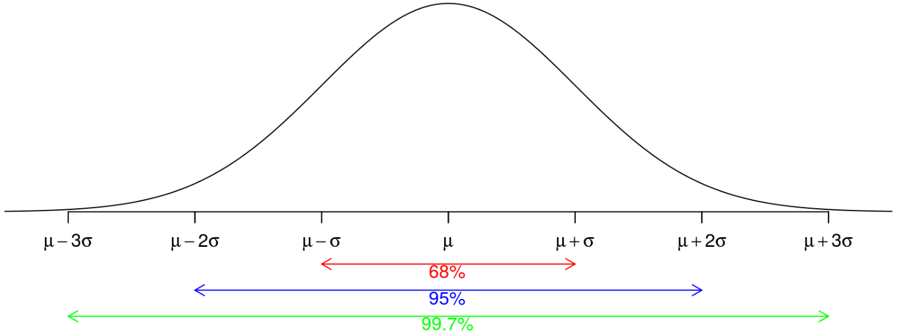
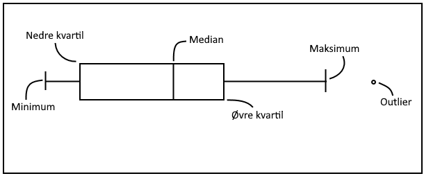

P2 - Simulering af Data
2020-02-19
Kapitel 1 Problemanalyse
1.1 Kvalitative variabler
De stokastiske variabler, som kategorisk kan opdeles kaldes for kategoriske eller kvalitative variabler. Ved en kvalitativ variabel fremgår der en faktor, som er den enhed der kategoriseres efter. Udfaldsmængen, er de mulige værdier, som kan forekomme ved en undersøgelse af faktoren. (Dette kunne som et eksempel være nationalitet, hvor man kategoriseres efter land, hvor udfaldsmængen er landene i verden.)
De kvalitative variabler er opdelt efter en norminal og ordinal skala.
Den norminale beskriver variable, som ikke har en naturlig rangorden, og derved ikke kan rangeres. Ofte er de norminale variabler tekststrenge, men de kan også være numeriske i form af postnumre, dog vil det være meningsløst at foretage udregninger såsom gennemsnittet eller standardafvigelsen. Eksempler på norminale variabler er; køn, hudfarve, nationalitet, hårfarve m.m., da udfaldsmængen i faktorene ikke kan rangordnes. Derved skal norminale variable illustreres ved et cirkeldiagram da der ikke er givet nogle skala. De udregninger, som man kan foretage sig på norminale variable er andele og frekvenser, da disse kun kan skelne udfald.
De ordinale variable er de kvalitative variable, som derimod godt kan rangordnes. Eftersom udfaldsmængen er naturligt rangeret, og samtidig er kategoriske variable, vil det altså være en ordinal variabel. Heriblandt er ordinale variable; økonomisk status, uddannelsesgrad, karakterer m.m. Disse variables udfaldsmængde er altså rangeret i forhold til hinanden, da det er bedre at være i en høj indkomst fremfor en lav indkomst og ligeledes er det bedre at få karakteren 10 end karakteren 4. Ud fra observationerne kan man efterfølgende som eksempel finde medianen, kvartiler m.m. Ønsker man at finde middelværdien skal man være lidt påpasselig, eftersom det reelt set ikke giver nogen mening. Dog er det muligt at udregne middelværdien hvis der er en fælles forståelse af, hvad middelværdien betyder for faktoren og hvilken skala, det er udregnet på baggrund af. Når ordinale variable illustreres skal det gøres som et søjlediagram efter rangordenen.
[ASTA bogen s. 12-13]
1.2 Outliers
En outlier kan beskrives som en observation, der afviger betydeligt fra resten af den stikprøve, observationen stammer fra (WIKI). Denne beskrivelse uddybes neden for, hvor to forskellige metoder til at identificere outliers gennemgås.
Den første metode til at identificere outliers tager udgangpunkt i fordelingen af observationerne. Hvis fordelingen er tilnærmelsesvis klokkeformet, gælder følgende figur, hvor \(\mu\) er middelværdien og \(\sigma\) er standardafvigelse.

Det gælder altså, at \(\approx 68 \%\) af observationerne findes inden for en standardafvigelse fra middelværdien, \(\approx 95 \%\) inden for to standardafvigelser og \(\approx 99,7 \%\) inden for tre standardafvigelser.
På baggrund af dette, kan en outlier defineres som en værdi, der ligger et vist antal standardafvigelser væk fra middelværdien. Som udgangspunkt siges det, at hvis en værdi er mere end \(3\) standardafvigelser væk fra middelværdien, kan den ses som en outlier.
En anden måde at beskrive fordelingen af en observation er ved hjælp af percentiler - et punkt for hvilket en hvis mængde af data antager værdier over eller under. Her en medianen et specialtilfælde af en percentil, 50-percentilen, hvor halvdelen af data antager værdier under punktet, og den anden halvdel over punktet. Generelt defineres en percentil som…
Definition 1.1 p-percentilen er et punkt, således at \(p \%\) af observationerne antager værdier under punktet, og \((100 - p) \%\) af observationerne antager værdier over punktet.
To andre særlige tilfælde af percentiler er 25-percentilen, den nedre kvartil (\(Q_L\)), og 75-percentilen, den øvre kvartil \(Q_U\). Ved hjælp af \(Q_L\) og \(Q_U\) kan variabiliteten af observationerne beskrives som afstanden mellem de to kvartiler. Denne afstand benævnes Inner Quartile Range, IQR, og beregnes som \(IQR = Q_U - Q_L\).
Når både minimum, \(Q_L\), median, \(Q_U\) og maksimum er fundet, kan disse benyttes til at tegne et boksplot af observationerne. Et boksplot giver et grafisk overblik af midten og variabiliteten af observationerne. Et boksplot ser ud, som på nedenstående figur…

På baggrund af IQR og boksplottet kan outliers nu defineres som data, der antager værdier mere end \(1,5(IQR)\) gange over \(Q_U\) eller under \(Q_L\).
Outliers er altså værdier, der er ekstreme nok til at påvirke en dataanalyse i forkert retning. Derfor benyttes forskellige metoder til at identificere sådanne outliers, som derefter kan fjernes i en rengøring af datasættet.
(Medmindre andet er angivet, er kilden vores ASTA-bog)